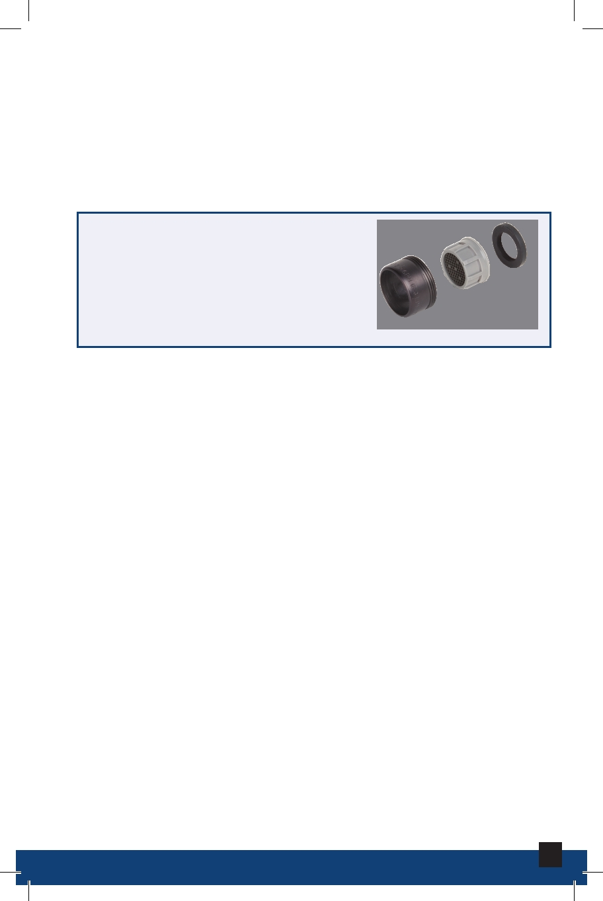

ABS Pipe
Acrylonitrile Butadiene Styrene (ABS pipes) is commonly
used in drain systems, but is no longer code in new
installations.
Aerator
Filter at the end of the spout in
faucets that traps minerals and
sediments in water supply lines.
Aerator
Appliances (Plumbing)
Machines that use water, such as water heaters,
dishwashers, washing machines, water softeners, and
garbage disposals.
CPVC Pipe
Chlorinated Polyvinyl Chloride (CPVC pipes) commonly
used in water supply systems.
20
Plumbing Maintenance and Repair